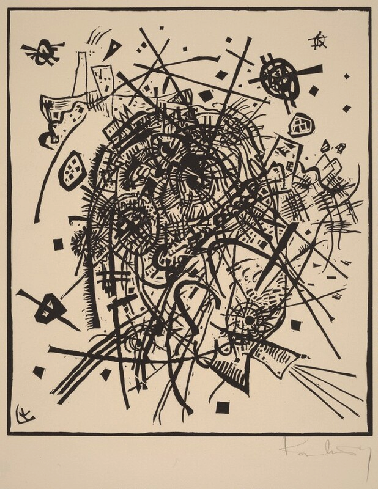

"Artificial intelligence (AI) is thought to be currently revolutionizing both science and society at large. In this essay my primary objective is to investigate how an AI revolution fits into the Kuhnian framework and understand exactly how it is changing science. If AI is in fact revolutionary, then how is it interacting with the exemplars of the fields it is being used in? Deep learning, one of the most popular mathematical models to which AI refers, is at first instance a new kind of instrument being implemented across scientific fields. It is not a theoretical development that addresses a field-specific problem in a novel way, but rather a multi-purpose tool that can assist in the process of scientific discovery in any field. Philosophers of science have been generally skeptical of the use of AI in the scientific enterprise due to its questionable epistemic status. Machine learning algorithms, specifically those powerful enough to work as reliable object classifiers like deep learning, lack (for the most part) an interpretable internal logic. In other words, they are tools which give us accurate results without us being able to fully reverse engineer and understand how these results were reached. Because of the questionable epistemic access into AI’s internal logic philosophers of science believe AI violates the important scientific value of transparency in the production of knowledge, and remain skeptical to the truly scientifically revolutionary status of AI."
Link to full essay